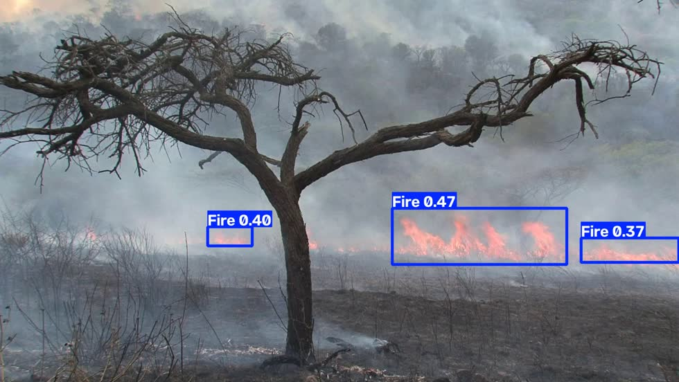
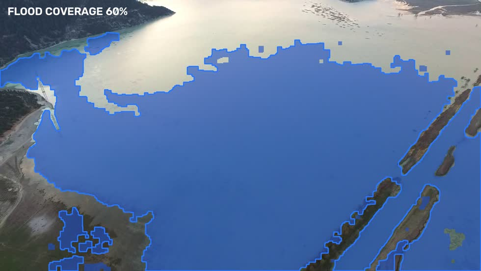
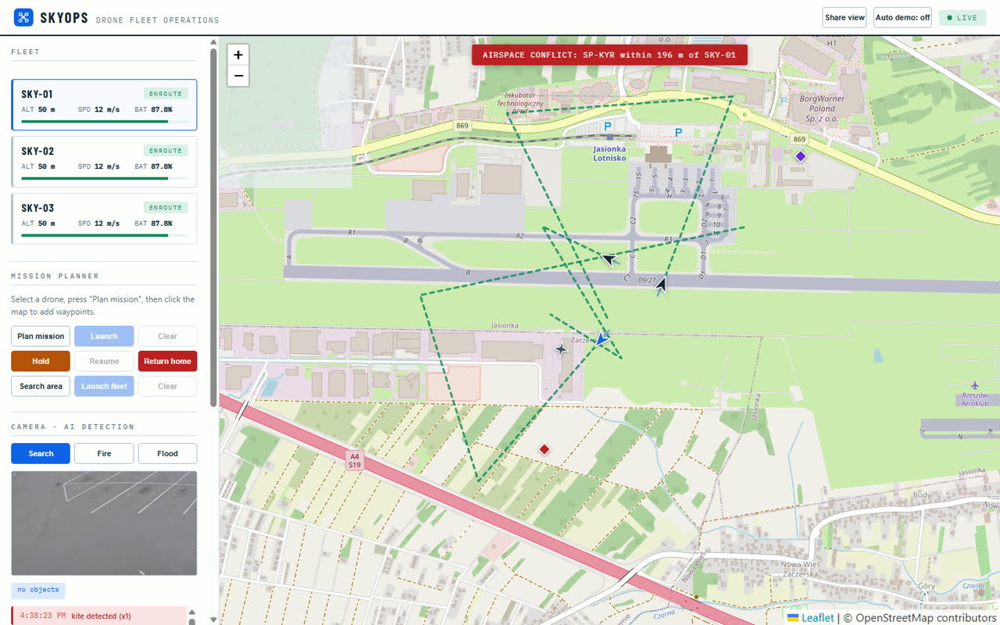

SkyOps puts your whole fleet on a live map: plan a mission by clicking waypoints, launch, and watch telemetry stream in real time while onboard AI reads the video - people, vehicles, fire, flood water. From daily operations to crisis response, one screen runs it all.
A river gauge knows the water level but not its extent. A drone sees the extent but not always the meaning. Neither is enough on its own, and pretending otherwise is how people get sent down a flooded road.
Live river levels from Poland's public IMGW feed, with the official warning and alarm thresholds. A gauge crossing its threshold is the reason to fly - not a guess.
Every detection carries the model's own confidence. The operator confirms or rejects it, and the report separates what a person verified from what only the machine proposed.
Flood coverage becomes road passability: which stretch is impassable, which is clear. Roads nobody flew over are marked unknown - never reported as safe.
One dashboard covers the full operating loop - built for survey, inspection and security teams that fly more than one aircraft.
Every aircraft on one map with heading, altitude, speed and battery, refreshed five times per second over WebSocket.
Drop waypoints straight onto the map and launch. No mission files, no desktop software, no training day.
A YOLOv8 neural network scans the camera feed and boxes people and vehicles live, with running counts per class.
Hold, resume or recall any aircraft mid-mission with one click - commands take effect in under a second.
Aircraft return home and land on their own at 25% battery, whether or not an operator is watching.
Ships with a built-in flight simulator for demos and training; the MAVLink connector points the same UI at real PX4 aircraft.
Every flight is recorded automatically - route, telemetry, AI detections - and turns into a clean PDF report with one click.
Draw no-fly zones on the map. Missions into a zone are rejected, and an aircraft that strays inside returns home on its own.
When the AI spots something new - a person, a vehicle - an alert lands in the feed with a timestamp, as it happens.
Draw an area on the map and the whole fleet splits it into parallel coverage routes automatically - intent, not waypoints.
One click copies a read-only link: crisis staff or stakeholders watch everything live on any phone, and can command nothing.
Surrounding traffic on the same map - ADS-B aircraft, Remote ID drones, unknown intruders - with conflict warnings and a UTM check-in step on every launch.
All three modes are live in the platform today - switch between them in the dashboard's camera panel. The images below are real output from our detection pipeline, not mockups, and every sortie ends with a bilingual Situation Report PDF: detection timeline with GPS coordinates, route map, and an SHA-256 evidence hash.
A fire-trained neural network spots flames and smoke from the air and places them on the map while the front is still small.
Computer vision outlines flooded terrain and measures coverage, pass after pass - live situational awareness for crisis staff.
Drones split a search area into an automatic grid and the AI flags every human shape for the operator to confirm.


Select an aircraft, click waypoints on the map, press Launch.
The aircraft climbs to cruise altitude and flies the route leg by leg while telemetry streams back.
The AI watches the camera and counts what it sees - people, vehicles, equipment - in real time.
Mission complete or battery low, the aircraft comes home and lands itself.

Detections update every second, drawn as bounding boxes on the live video - and each new object raises a timestamped alert.
| Telemetry link | WebSocket, 5 Hz per aircraft, auto-reconnect |
|---|---|
| Video / AI | MJPEG stream at 15 fps, YOLOv8 inference on every frame |
| Backend | Python, FastAPI - deploys on any Linux box or cloud VM |
| Frontend | Browser-based, no install; works on any laptop or tablet |
| Flight records | Automatic per-flight logs; one-click PDF reports with route, telemetry and AI detections |
| Safety | Polygon no-fly zones enforced at planning and in flight; automatic return-to-home at low battery |
| Aircraft link | Built-in simulator today; MAVLink / MAVSDK connector for PX4 and ArduPilot aircraft |
See SkyOps flying live - plan a mission yourself and watch the AI pick out objects in the feed. Find us in the EXPO zone.